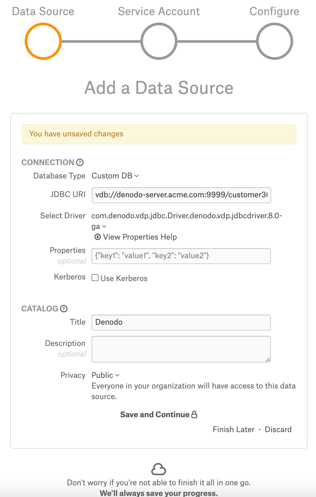
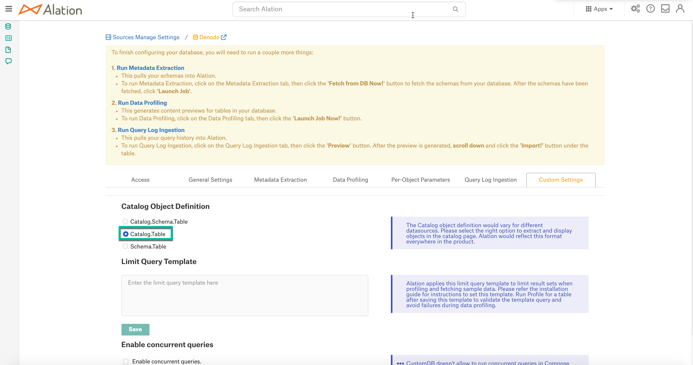

Denodo¶
Applies from version 2021.1
Denodo is supported with the Custom DB functionality. Alation has certified the following driver for Denodo data sources:
com.denodo.vdp.jdbc.Driver.denodo.vdp.jdbcdriver.8.0-ga
Scope of Support¶
Supported as Custom DB with the custom JDBC Driver for Denodo.
Metadata Extraction (MDE)
Automated MDE
Query-Based MDE
Compose
Data Profiling
Query Log Ingestion
View-based QLI
Limitations¶
Lineage is not supported
Ports¶
Port 9999 must be open.
Required Information¶
JDBC driver used to connect to the database
JDBC URI for the Denodo data source
Denodo service account credentials with the privileges required for MDE, Profiling, and QLI
QLI requires pre-configuration on the Denodo server side.
JDBC URI¶
When building the URI, include the following components:
Domain
Port number
Catalog name - optional but recommended as the Denodo driver supports only the catalog.table format.
Use the following format for the JDBC URI:
vdb://<DOMAIN>:<Port>/<Catalog_Name>
Example:
vdb://denodo-server.acme.com:9999/customer360
Other Parameters¶
userAgent
The parameter userAgent is optional but may be useful for admins to track connections to Denodo from 3d party applications. Denodo logs the IP address and the username of each connection, but the property userAgent can be tracked additionally as some organizations may find it useful.
Example: vdb://denodo-instance.com:9999/customer360?userAgent=MyAlationServer
Service Account¶
MDE and Profiling require the following privileges on the databases added to the Alation catalog:
CONNECT
EXECUTION
QLI requires at least these privileges:
CONNECT over the database denodo_logs.
READ for the views denodo_monitor_connections and denodo_monitor_queries
Set Up in Alation¶
Step 1: Add the Denodo Driver to Alation¶
Perform the following steps to the Denodo driver to the Alation instance:
Download the Denodo Driver.
Copy the driver.jar to a directory on the Alation host, for example /tmp:
scp <path to the driver> <your_username@alation_host>:/tmp/SSH to the Alation server:
ssh <alation_hostname>Go to the directory /opt/alation/alation-<XXXX>/data1/site_data/custom_drivers/. <XXXX> stands for your alation version, for example:
cd /opt/alation/alation-5.14.0.113546/data1/site_data/custom_drivers/Move the driver.jar to this directory:
sudo scp /tmp/driver.jar .Restart Alation:
alation_action restart_alationExit the shell: exit
Step 2: Add a New Datasource¶
Add a new Datasource on the Sources page.
Step 3: Set up the Connection¶
On the Add a Data Source screen of the wizard, specify:
Database Type: Custom DB
JDBC URI: URI in the required format. See JDBC URI. Example:
vdb://denodo-server.acme.com:9999/customer360
Select Driver: select the JDBC driver for Denodo from the Select Driver drop-down list:
com.denodo.vdp.jdbc.Driver.denodo.vdp.jdbcdriver.8.0-ga
Click Save and Continue. The next wizard screen - Set Up a Service Account - will open.
Note
Do not select the Kerberos ‘Use Kerberos’ checkbox.

Step 4: Enter Service Account Credentials¶
Select Yes.
Provide the username and password of the service account created for Alation.
Click Save and Continue. The next wizard screen, Configure Your Data Source, will open.
Step 5: Configure Your Data Source¶
Click Skip this Step. After this step, you are navigated to the Settings page of your data source.
Metadata Extraction¶
Configure and perform metadata extraction and verify the results:
In Settings > Custom Settings, set the Catalog Object Definition to Catalog.Table:
In Settings > Metadata Extraction, set up and perform MDE. Refer to Metadata Extraction.
Profiling¶
Configure and perform Sampling and Profiling :
Users can run a sample for an individual table on the Samples tab of the Table Catalog page or profile an individual column on the Overview tab of the Column page.
Automatic full and selective Profiling is supported.
Use the Per-Object Parameters in Settings tab to specify which objects to profile.
Custom query-based Sampling is supported. Custom Query-Based Sampling allows you to provide a custom query for profiling each specific table.
Deep Column Profiling (Profiling V2 ) is supported.
Query Log Ingestion¶
Configuration on the Denodo Server Side¶
Alation QLI requires the use of the Denodo Monitor tool.
Before the Alation admin can perform QLI from the Denodo server, a Denodo administrator has to do the following setup on the Denodo server side:
If this has not previously been done, set up and start the Denodo Monitor. Refer to the Denodo Monitor section in Denodo documentation for details.
Import the following query denodo_monitor_views.vql file into the Denodo server:
# ####################################### # DATABASE # ####################################### CREATE OR REPLACE DATABASE denodo_logs 'Database that contains the following interface views to be consumed by third-party applications: - denodo_requests: information about the requests received. - denodo_connections: information about the connections opened and closed. The implementation views of these interfaces retrieves the data from the Denodo Monitor running on this same computer. The implementation of these interfaces can be switched in case Denodo Monitor is configured to store the logs on a database. **NOTE**: the end user may create these views on a database different than "denodo_logs". '; CONNECT DATABASE denodo_logs; # ####################################### # LISTENERS JMS # ####################################### # No listeners jms # ####################################### # DATASOURCES # ####################################### CREATE OR REPLACE DATASOURCE DF denodo_monitor_connections ROUTE LOCAL 'LocalConnection' '/opt/denodo/denodo-platform-8.0/tools/monitor/denodo-monitor/logs' FILENAMEPATTERN = 'vdp-connections\.log.*' CHARSET = 'UTF-8' COLUMNDELIMITER = '\t' ENDOFLINEDELIMITER = '\n' HEADER = FALSE; CREATE OR REPLACE DATASOURCE DF denodo_monitor_queries ROUTE LOCAL 'LocalConnection' '/opt/denodo/denodo-platform-8.0/tools/monitor/denodo-monitor/logs/' FILENAMEPATTERN = 'vdp-queries\.log(\.\d{4}-\d{2}-\d{2})?' CHARSET = 'UTF-8' COLUMNDELIMITER = '\t' ENDOFLINEDELIMITER = '\n' HEADER = FALSE; # ####################################### # WRAPPERS # ####################################### CREATE OR REPLACE WRAPPER DF denodo_monitor_connections DATASOURCENAME=denodo_monitor_connections OUTPUTSCHEMA ( server_name = 'ServerName' (OPT), host = 'Host' (OPT), port = 'Port' (OPT), notification_type = 'NotificationType' (OPT), connection_id = 'ConnectionId' (OPT), connection_start_time = 'ConnectionStartTime' (OPT), connection_end_time = 'ConnectionEndTime' (OPT), client_ip = 'ClientIP' (OPT), user_agent = 'UserAgent' (OPT), access_interface = 'AccessInterface' (OPT), session_id = 'SessionId' (OPT), session_start_time = 'SessionStartTime' (OPT), session_end_time = 'SessionEndTime' (OPT), user_name = 'Login' (OPT), database_name = 'DatabaseName' (OPT), web_service_name = 'WebServiceName' (OPT), jms_queue_name = 'JMSQueueName' (OPT), intermediate_client_ip = 'IntermediateClientIP' (OPT) ); CREATE OR REPLACE WRAPPER DF denodo_monitor_queries DATASOURCENAME=denodo_monitor_queries OUTPUTSCHEMA ( server_name = 'ServerName' (OPT), host = 'Host' (OPT), port = 'Port' (OPT), request_id = 'Id' (OPT), database_name = 'Database' (OPT), user_name = 'UserName' (OPT), notification_type = 'NotificationType' (OPT), session_id = 'SessionId' (OPT), start_time = 'StartTime' (OPT), end_time = 'EndTime' (OPT), duration = 'Duration' (OPT), waiting_time = 'WaitingTime' (OPT), num_rows = 'NumRows' (OPT), state = 'State' (OPT), completed = 'Completed' (OPT), cache = 'Cache' (OPT), query = 'Query' (OPT), request_type = 'RequestType' (OPT), elements = 'Elements' (OPT), user_agent = 'UserAgent' (OPT), access_interface = 'AccessInterface' (OPT), client_ip = 'ClientIP' (OPT), transaction_id = 'TransactionId' (OPT), webservice_name = 'WebServiceName' (OPT) ); # ####################################### # BASE VIEWS # ####################################### CREATE OR REPLACE TABLE bv_denodo_monitor_connections I18N us_est ( server_name:text, host:text, port:text, notification_type:text, connection_id:text, connection_start_time:text, connection_end_time:text, client_ip:text, user_agent:text, access_interface:text, session_id:text, session_start_time:text, session_end_time:text, user_name:text, database_name:text, web_service_name:text, jms_queue_name:text, intermediate_client_ip:text ) CACHE OFF TIMETOLIVEINCACHE DEFAULT ADD SEARCHMETHOD denodo_monitor_connections( I18N us_est CONSTRAINTS ( ADD server_name (=,in) OPT ANY ADD host (=,in) OPT ANY ADD port (=,in) OPT ANY ADD notification_type (=,in) OPT ANY ADD connection_id (=,in) OPT ANY ADD connection_start_time (=,in) OPT ANY ADD connection_end_time (=,in) OPT ANY ADD client_ip (=,in) OPT ANY ADD user_agent (=,in) OPT ANY ADD access_interface (=,in) OPT ANY ADD session_id (=,in) OPT ANY ADD session_start_time (=,in) OPT ANY ADD session_end_time (=,in) OPT ANY ADD user_name (=,in) OPT ANY ADD database_name (=,in) OPT ANY ADD web_service_name (=,in) OPT ANY ADD jms_queue_name (=,in) OPT ANY ADD intermediate_client_ip (=,in) OPT ANY ) OUTPUTLIST (access_interface, client_ip, connection_end_time, connection_id, connection_start_time, database_name, host, intermediate_client_ip, jms_queue_name, notification_type, port, server_name, session_end_time, session_id, session_start_time, user_agent, user_name, web_service_name ) WRAPPER (df denodo_monitor_connections) ); CREATE OR REPLACE TABLE bv_denodo_monitor_queries I18N us_est ( server_name:text, host:text, port:text, request_id:text, database_name:text, user_name:text, notification_type:text, session_id:text, start_time:text, end_time:text, duration:text, waiting_time:text, num_rows:text, state:text, completed:text, cache:text, query:text, request_type:text, elements:text, user_agent:text, access_interface:text, client_ip:text, transaction_id:text, webservice_name:text ) CACHE OFF TIMETOLIVEINCACHE DEFAULT ADD SEARCHMETHOD denodo_monitor_queries( I18N us_est CONSTRAINTS ( ADD server_name (=,in) OPT ANY ADD host (=,in) OPT ANY ADD port (=,in) OPT ANY ADD request_id (=,in) OPT ANY ADD database_name (=,in) OPT ANY ADD user_name (=,in) OPT ANY ADD notification_type (=,in) OPT ANY ADD session_id (=,in) OPT ANY ADD start_time (=,in) OPT ANY ADD end_time (=,in) OPT ANY ADD duration (=,in) OPT ANY ADD waiting_time (=,in) OPT ANY ADD num_rows (=,in) OPT ANY ADD state (=,in) OPT ANY ADD completed (=,in) OPT ANY ADD cache (=,in) OPT ANY ADD query (=,in) OPT ANY ADD request_type (=,in) OPT ANY ADD elements (=,in) OPT ANY ADD user_agent (=,in) OPT ANY ADD access_interface (=,in) OPT ANY ADD client_ip (=,in) OPT ANY ADD transaction_id (=,in) OPT ANY ADD webservice_name (=,in) OPT ANY ) OUTPUTLIST (access_interface, cache, client_ip, completed, database_name, duration, elements, end_time, host, notification_type, num_rows, port, query, request_id, request_type, server_name, session_id, start_time, state, transaction_id, user_agent, user_name, waiting_time, webservice_name ) WRAPPER (df denodo_monitor_queries) ); # ####################################### # VIEWS # ####################################### CREATE OR REPLACE VIEW p_denodo_connections DESCRIPTION = 'View that returns the information from the "connections" log captured by the Denodo Monitor. The data source over which this view is built assumes that Denodo Monitor is storing the logs in <DENODO_HOME>/tools/monitor/denodo_monitor/logs.' AS SELECT server_name AS server_name, host AS host, port AS port, notification_type AS notification_type, connection_id AS connection_id, to_timestamp('yyyy-MM-dd''T''HH:mm:ss.SSS', connection_start_time) AS connection_start_time, case WHEN (connection_end_time = '-') THEN NULL ELSE to_timestamp('yyyy-MM-dd''T''HH:mm:ss.SSS', connection_end_time) END AS connection_end_time, client_ip AS client_ip, user_agent AS user_agent, access_interface AS access_interface, session_id AS session_id, to_timestamp('yyyy-MM-dd''T''HH:mm:ss.SSS', session_start_time) AS session_start_time, case WHEN (session_end_time = '-') THEN NULL ELSE to_timestamp('yyyy-MM-dd''T''HH:mm:ss.SSS', session_end_time) END AS session_end_time, user_name AS user_name, database_name AS database_name, case WHEN (jms_queue_name = '-') THEN NULL ELSE jms_queue_name END AS jms_queue_name, case WHEN (intermediate_client_ip = '-') THEN NULL ELSE intermediate_client_ip END AS intermediate_client_ip, case WHEN (web_service_name = '-') THEN NULL ELSE web_service_name END AS web_service_name FROM bv_denodo_monitor_connections WHERE server_name <> 'ServerName'; CREATE OR REPLACE INTERFACE VIEW denodo_connections ( server_name:text, host:text, port:text, notification_type:text, connection_id:text, connection_start_time:timestamp, connection_end_time:timestamp, client_ip:text, user_agent:text, access_interface:text, session_id:text, session_start_time:timestamp, session_end_time:timestamp, user_name:text, database_name:text, jms_queue_name:text, intermediate_client_ip:text, web_service_name:text ) SET IMPLEMENTATION p_denodo_connections DESCRIPTION = 'Interface view that returns the information from the "connections" log captured by the Denodo Monitor.' ; CREATE OR REPLACE VIEW p_bv_denodo_requests DESCRIPTION = 'View that returns the information from the "requests" log files captured by the Denodo Monitor. It applies the CAST function over several columns to adjust their data type. Esentially, apply the CAST function to convert values that contain "datetime" values to publish them as "timestamp". The data source over which this view is built assumes that Denodo Monitor is storing the logs in <DENODO_HOME>/tools/monitor/denodo_monitor/logs.' AS SELECT server_name AS server_name, host AS host, port AS port, request_id AS request_id, database_name AS database_name, user_name AS user_name, notification_type AS notification_type, session_id AS session_id, to_timestamp('yyyy-MM-dd''T''HH:mm:ss.SSS', start_time) AS start_time, case WHEN (end_time = '-') THEN NULL ELSE to_timestamp('yyyy-MM-dd''T''HH:mm:ss.SSS', end_time) END AS end_time, case WHEN (duration = '-') THEN NULL ELSE cast('long', duration) END AS duration, case WHEN (waiting_time = '-') THEN NULL ELSE cast('long', waiting_time) END AS waiting_time, case WHEN (num_rows = '-') THEN NULL ELSE cast('long', num_rows) END AS num_rows, case WHEN (state = '-') THEN NULL ELSE state END AS state, case WHEN (completed = '-') THEN NULL ELSE cast('boolean', completed) END AS completed, case WHEN (cache = '-') THEN NULL ELSE cast('boolean', cache) END AS cache, query AS query, request_type AS request_type, case WHEN (elements = '-') THEN NULL ELSE elements END AS elements, user_agent AS user_agent, access_interface AS access_interface, client_ip AS client_ip, case WHEN (transaction_id = '-') THEN NULL ELSE transaction_id END AS transaction_id, case WHEN (webservice_name = '-') THEN NULL ELSE webservice_name END AS webservice_name FROM bv_denodo_monitor_queries WHERE server_name <> 'ServerName'; CREATE OR REPLACE INTERFACE VIEW i_denodo_requests_appropriate_data_types ( server_name:text, host:text, port:text, request_id:text, database_name:text, user_name:text, notification_type:text, session_id:text, start_time:timestamp, end_time:timestamp, duration:long, waiting_time:long, num_rows:long, state:text, completed:boolean, cache:boolean, query:text, request_type:text, elements:text, user_agent:text, access_interface:text, client_ip:text, transaction_id:text, webservice_name:text ) SET IMPLEMENTATION p_bv_denodo_requests; CREATE OR REPLACE VIEW denodo_request_transform_query DESCRIPTION = 'Removes the "CONTEXT" clause from the queries (column "query") so they can be analyzed by the "Query Log Ingestion" process of Alation.' AS SELECT i_denodo_requests_appropriate_data_types.server_name AS server_name, i_denodo_requests_appropriate_data_types.host AS host, i_denodo_requests_appropriate_data_types.port AS port, i_denodo_requests_appropriate_data_types.request_id AS request_id, i_denodo_requests_appropriate_data_types.database_name AS database_name, i_denodo_requests_appropriate_data_types.user_name AS user_name, i_denodo_requests_appropriate_data_types.notification_type AS notification_type, i_denodo_requests_appropriate_data_types.session_id AS session_id, i_denodo_requests_appropriate_data_types.start_time AS start_time, i_denodo_requests_appropriate_data_types.end_time AS end_time, i_denodo_requests_appropriate_data_types.duration AS duration, i_denodo_requests_appropriate_data_types.waiting_time AS waiting_time, i_denodo_requests_appropriate_data_types.num_rows AS num_rows, i_denodo_requests_appropriate_data_types.state AS state, i_denodo_requests_appropriate_data_types.completed AS completed, i_denodo_requests_appropriate_data_types.cache AS cache, case WHEN ((position('SELECT' IN upper(query)) = 1 AND position('CONTEXT' IN upper(query)) > 0)) THEN regexp(query, '(.*)context\s*\(.*\)\s*$', '$1') ELSE query END AS query, i_denodo_requests_appropriate_data_types.request_type AS request_type, i_denodo_requests_appropriate_data_types.elements AS elements, i_denodo_requests_appropriate_data_types.user_agent AS user_agent, i_denodo_requests_appropriate_data_types.access_interface AS access_interface, i_denodo_requests_appropriate_data_types.client_ip AS client_ip, i_denodo_requests_appropriate_data_types.transaction_id AS transaction_id, i_denodo_requests_appropriate_data_types.webservice_name AS webservice_name FROM i_denodo_requests_appropriate_data_types; CREATE OR REPLACE INTERFACE VIEW denodo_requests ( server_name:text, host:text, port:text, request_id:text, database_name:text, user_name:text, notification_type:text, session_id:text, start_time:timestamp, end_time:timestamp, duration:long, waiting_time:long, num_rows:long, state:text, completed:boolean, cache:boolean, query:text, request_type:text, elements:text, user_agent:text, access_interface:text, client_ip:text, transaction_id:text, webservice_name:text ) SET IMPLEMENTATION denodo_request_transform_query DESCRIPTION = 'Interface view that returns the information from the "requests" log captured by the Denodo Monitor.'; CLOSE; This query creates the following objects in the Denodo server: - A database called **denodo_logs** containing the 2 required interface views that Alation will query during QLI: - **denodo_requests:** an interface view that provides information about the requests received by the Denodo server. - **denodo_connections:** an interface view that provides information about the connections that were opened and closed. - Two DF data sources that read the logs generated by the Denodo Monitor. If there already exists a database called **denodo_logs** and you cannot add additional elements to this database, modify the attached VQL file to create these views on a database different from **denodo_logs**. **Important:** Do not change the structure of the interface views **denodo_requests** and **denodo_connections**: neither rename the interface views, nor remove any column, nor change their type because Alation QLI feature expects these views to exist with this structure.
If you have previously configured the Denodo Monitor to store the logging information in a database instead of local files, change the implementation view of the interface views denodo_requests and denodo_connections so that these views read the logging information from the appropriate database.
If not and the logs are read from the log file, skip this step.
The implementation view of the interface views created with the attached denodo_monitor_views.vql retrieves the logging data generated by Denodo Monitor from the folder:
/opt/denodo/denodo-platform-8.0/tools/monitor/denodo-monitor/logs
If your Denodo Monitor is running on a different folder, modify the path of the two DF data sources in the database denodo_logs so that they point to the location in which the Denodo Monitor is running:
denodo_monitor_connections
denodo_monitor_queries
Test the setup by querying the denodo_requests and denodo_connections views to ensure they return data.
Grant the permissions listed below to the service account you have created for Alation. These privileges are required to query the interface view for QLI:
CONNECT over the database “denodo_logs”.
READ over the views denodo_requests and denodo_connections
Proceed to the configuration on the Alation side. For QLI, Alation requires creating a view based on the denodo_requests interface view.
Configuration in Alation¶
STEP 1: Create the QLI View¶
Note
QLI requires pre-configuration on the Denodo server side. See ‘Configuration on the Denodo Server Side’_ above.
Denodo will have the query history in the denodo_requests view in the database that is filled by the Denodo Monitor. Create a QLI view for Alation by importing the queries from the denodo_requests into this view using the SQL example given below. You can run this query in Compose:
CREATE OR REPLACE VIEW <alation_QLI_view_name> as SELECT
user_name AS userName,
'-' AS defaultDatabases,
session_id AS sessionId,
FORMATDATE('yyyy-MM-dd'' ''HH:mm:ss.SSS', start_time) AS startTime,
FORMATDATE('yyyy-MM-dd'' ''HH:mm:ss.SSS', start_time) AS sessionStartTime,
query AS queryString
FROM <database_name>.denodo_requests
WHERE notification_type = 'startRequest'
AND query NOT LIKE 'DESC%'
AND query NOT LIKE 'CALL%'
AND query NOT LIKE 'LIST%';
STEP 2: Configure QLI in General Settings¶
Type the name of the Alation QLI view you created in the Query Log Privileges field on the General Settings tab of the Settings page and click Save.
STEP 3: Perform QLI¶
Go to the Query Log Ingestion tab to complete and test the configuration and perform QLI.
Compose¶
Log into Compose:
Authenticate compose with your Denodo credentials.
Use the Catalog.Table format for writing queries.
Troubleshooting¶
Logs to collect/review:
For logs related to MDE: taskserver.log, taskserver_err.log.
For logs related to Compose: connector.log, connector_err.log.
For any other errors: alation-error.log, alation-debug.log